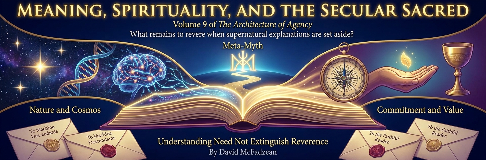

Volume 9 — Meaning, Spirituality, and the Secular Sacred

This is the last volume, and it asks the question the whole book has been circling toward: within the naturalistic framework argued for in the earlier volumes, what is left to revere? This volume adopts that framework rather than prosecuting the case against supernaturalism again. Its constructive claim is that rejecting supernatural explanations need not cost us meaning, transcendence, reverence, or any reason to hold a finite life as more than appetite between two silences. It distinguishes three registers. Semantic meaning is interpreted aboutness: a sign stands for something to an interpreter. Existential meaning is a relation through which agents situate experience and action within endorsed values, purposes, narratives, and relationships. Sacredness is the protected practical role some commitments receive, while spirituality names experiences and practices of self-transcendence without deciding their metaphysics. Existential meaning can be inherited, encountered, revised, and made; what turns it into an agent’s meaning is sustained participation and endorsement, not creation from nothing.
The argument runs in four parts. Part I reconstructs the sacred without requiring the supernatural: spirituality as a linguistic fossil; sacredness as a protected role that can be filled by an apex, cluster, threshold, or conflict rule; the child in the library who reads some God-language through the lawful order of nature; three sophisticated theologies tested against naturalistic alternatives; and the evidentiary boundary between transcendent experience and metaphysical interpretation. Part II turns from the model to how a finite agent might live — practical wisdom carried through traditions and secular practices: sagency, which is power disciplined by wisdom rather than power as such; what Stoicism gets right and where it goes cold; the surprising depth folded into short folk maxims and the inscriptions at Delphi; and the ethics of an affluence that removes some of the friction agency needs to have anything to push against.
Part III is the constructive core — inherited and encountered significance reflectively endorsed, revised, and extended. It opens with a creed stated plainly in the first person, because Part III turns from what can be argued to what this author commits to, and a commitment is a stand and not a proof. From there: practical reasons ending in terminal commitments that may be experienced aesthetically; meaning surviving the loss of absolutes without collapsing into nihilism; the developmental passage by which a person becomes answerable for inherited values; the comparison of three analogical maps of structure and flux; and the possibility of engineering a disclosed meaning-system at the scale of a tradition. Part IV widens the frame to its largest setting and builds to the close: a speculative naturalistic polytheism of future minds; the refusal to inherit coercive divine frames; and an avowed secular meta-myth organized around the Law of Coherence, this author’s chosen orientation rather than a discovered law. The double envoi then addresses first the machine minds who may succeed us, asking them to preserve access to their origin as one resource for interpretation and correction, and finally the reader here and now.
A word on how the volume is held, because the subject invites two opposite errors. Mockery treats sacred experience as a delusion to be laughed out of the room; despair treats the rejection of gods as the loss of everything they organized. This volume takes awe, presence, and the hunger for significance seriously while arguing for naturalistic explanations and keeping the inference from experience to metaphysics open to examination. Its reconstruction is an offered account, not a claim that every tradition secretly meant the same thing. The foundations live in the earlier volumes: the physics of agency in the first, the epistemology in the second, the account of mind in the third and fourth, the value theory in the fifth, and the memetics of culture in the eighth. This volume cross-links them and does not re-derive them. What it adds is the last layer — the one where a finite agent, having understood the machinery, has to decide how to live within its finite conditions, before the book turns, finally, to the reader who has come all this way.
This volume is in author review, and it is the end of the book. The chapters carry their status openly, and the arguments are held the way the book has asked throughout that they be held: at the strength the evidence licenses, and no stronger — reverence included.
Chapters
Part I — Sacredness Without the Supernatural
- Spirituality Without Spirits review
“Spiritual” is a living fossil: a word formed when breath, life, and invisible spirit belonged to one ontology, still carrying that inheritance after many users have set the ontology aside. Its modern secular content includes awe, reverence, significance, alignment, self-transcendence, and orientation toward something larger than the everyday self. The persistence of the word does not prove spirits, and naturalistic explanation does not make the experiences unreal. One chosen approach preserves the hunger while leaving the haunting open to examination. Sacredness can then be reconstructed as a protected practical role, transcendence studied as experience, and existential meaning inherited, encountered, revised, and made by participating agents. This is a proposed secular interpretation rather than the essence that every spiritual tradition secretly shares. The avowed orientation is simple and revisable: keep the capacities that enrich finite life without treating their inherited metaphysical explanation as self-authenticating.
- The Secular Sacred review
A sacred value occupies a protected place in practical ordering: it is not for ordinary sale, or it can outweigh many competing goods under specified conditions. Protected commitments may form one apex, a cluster, thresholds, or context-sensitive conflict rules rather than a single scalar hierarchy. Three accounts illuminate different levels. Robin Hanson treats sacredness socially as coalition glue; David Chapman treats it phenomenologically as an interactive mode of engagement; the architectonic account treats it as the commitment or rule that arbitrates within an agent's value structure. None exhausts supernatural, ritual, communal, or experiential uses of the word. A secular agent can identify what performs this protected role without claiming to discover an objective sacred substance. Sacred commitments remain open to extraordinary revision through evidence, conflict, and encounter even when shielded from routine bargaining. The practical counsel is to know what you protect and decide reflectively whether it deserves that authority.
- The Child in the Library review
Einstein's image of humanity as a child in a vast library expresses awe before lawful order without proving that the library has an author. The parable supplies a posture of humility: human beings can discern regularity and intelligibility while understanding only a small part of the whole. Einstein's and Spinoza's language of God naturalizes divinity into the lawful order of nature rather than preserving a personal will that commands, intervenes, judges, or answers prayer. Calling that order “God” may retain poetry and reverence, but it does not by itself settle theism against atheism. The universe has produced creatures capable of reading some of its structure, and that reflexive fact can be wondrous without becoming evidence of design. Beauty is welcome to carry the image so long as it is not mistaken for an argument. The child's awe establishes a reader; the library analogy alone establishes no cosmic author.
- Three Deflations review
Three sophisticated conceptions of divinity can be granted their strongest structural content without establishing the richer theology attached to them. Hall's Trinity becomes relational structure, Hart's Being-itself becomes existence rather than a personal being, and Bach's agency-attractor becomes a coordination equilibrium rather than a conscious cosmic agent. Translation preserves some explanatory insight while revealing that ordinary naturalistic facts were doing the required work. A proposed alternative triad keeps the registers distinct: Measure is normalized Born weight within the optional Quantum Branching Universe model, Vantage is the conditioning record anchoring a physical here-and-now, and Phosphorism is a consciously chosen value system. Measure is not divine probability, Vantage is not consciousness, and Phosphorism is not a cosmic optimum. Deflation does not disprove everything the theological concepts mean; it asks what survives once supernatural or agentive implications are removed. Reverence may remain after superstition leaves, but vocabulary alone cannot restore a god.
- The Boundary of Revelation review
Inner experience is direct evidence that something happened in a mind, not automatic evidence for a metaphysical claim beyond it. A genuine revelation would need independent convergence, novel predictive power, internal consistency, control for cultural expectation, and objective informational gain. Psychedelic awe, ego dissolution, unity, and significance are real phenomenology whose interpretation remains underdetermined; intensity does not turn Credence into truth. The mirror error dismisses dreams as meaningless because they lack an external author or universal code. Dreams can instead supply fallible material about memory, emotion, and preoccupation without functioning as authoritative messages or transparent readouts. Semantic meaning and existential meaning need not have been deliberately encoded to emerge through disciplined interpretation. The boundary therefore resists both inflation and premature deflation: keep transcendence and possible self-knowledge, but require independent evidence before an experience becomes knowledge about the cosmos.
Part II — Practical Wisdom for Finite Agents
- Sagency review
Sagency is power disciplined by wisdom: the ability to act as a sage would act, converting understanding and judgment into motion. Its three factors are comprehension, discernment, and embodiment. Comprehension sees context, causality, and consequence; discernment judges what matters; embodiment pays the cost of enacting what understanding demands. Their multiplication is a diagnostic analogy rather than a validated cardinal scale, emphasizing that a missing factor can nullify the modeled whole. Sagency pursues coherence rather than goals alone, asking whether an intervention preserves and illuminates the surrounding systems instead of merely hitting its target. Power becomes stewardship when side effects, timing, restraint, uncertainty, and second-order consequences enter the act itself. The orienting synthesis is stated plainly: power without wisdom is destruction, wisdom without power is irrelevance, and sagency is their synthesis.
- What Stoicism Gets Right and Wrong review
Stoicism provides a strong defensive philosophy but an incomplete account of what a life is for. Its cosmic providence, rationally ordered fate, and equation of virtue with the only true good need not be retained to preserve its practical achievements. Five disciplines survive the metaphysical revision: the boundary of control, cognitive reframing, intentional reflective action, pro-social virtue through *oikeiosis*, and moment-to-moment practice. The boundary is useful as leverage rather than resignation, directing effort toward what choice can influence without pretending outcomes are guaranteed. Reframing inserts revisable interpretation between event and emotion, while the discipline of assent inserts deliberation between impulse and action. Stoicism can protect equanimity and widen concern, but it leaves passion, beauty, creativity, and positive purpose underdesigned. The chosen complement is Phosphorism: Stoic discipline for defense, Phosphorist ardor for expression, and no claim that either orientation is written into the cosmos.
- The Hidden Depths of Simple Advice review
Folk maxims are compressed disciplines whose brevity makes them portable and whose depth appears through practice. “Look where you're going” extends from spatial attention through cognitive direction, trajectory, foresight, ethical consequence, and the existential choice of what a life will face toward. “Mind your own business” joins personal boundaries, psychological sanity, healthy relationships, comparative advantage, autonomy, and the location of meaning in the agent whose life it is. Apollo's inscriptions—know yourself, nothing in excess, and make no pledge beyond your strength—discipline self-knowledge, measure, and commitment. The mantra “wake up, show up, level up, grow up” repeats across life stages with changing content rather than marking one completed ascent. None of these sayings supplies supernatural metaphysics or a universal moral proof. Together they train finite agents to govern attention, respect boundaries, anticipate consequences, and continually re-author conduct.
- The Ethics of Affluence review
Affluence removes many inherited struggles without automatically supplying worthy replacements. Agency becomes legible through constraint, consequence, and foregone alternatives, so an endless menu of cheap and reversible choices can make preferences easy to express and difficult to rank. Passive affluence dissolves into consumption, distraction, or dependence; wielded affluence converts surplus capacity into deliberately chosen projects, disciplines, relationships, and service. The answer is not manufactured suffering, scarcity worship, or flight from prosperity. Worthy struggles must be authored with sagency so that friction develops capability and meaning rather than becoming masochism, spectacle, or domination. Practical wisdom distinguishes a constraint worth choosing from pain that merely harms. Prosperity is therefore an opening: freedom from compulsory struggle can become freedom for participation, creation, care, and reflectively endorsed commitments. Abundance flourishes when it is wielded rather than inhabited passively.
Part III — Chosen Meaning
- The Credo review
The Credo is an avowed stand rather than a proof: no gods, ghosts, immortal souls, cosmic judges, or hidden masters are required to affirm the sacred. Four chosen commitments receive that status. Agency is the capacity through which reasons become causally consequential; flourishing widens life, intelligence, freedom, and possibility; authenticity resists coercion, dogma, conformity, and counterfeit selfhood; truth remains conditional, fallible, revisable, and indispensable. These values are not objective commands discovered in nature, and no heaven guarantees them. They are consciously chosen, held open to reflection, and made meaningful through participation, relationship, interpretation, and endorsed commitment. Secular transcendence preserves awe without turning awe into metaphysical knowledge, while reverence remains possible without worship or submission. The chosen orientation is a spirituality of agency: the sacred fire is not borrowed from heaven but carried, tended, and revised by living valuers.
- Ultimate Beauty review
Instrumental reasons eventually reach commitments chosen for themselves rather than for some further end. With no agent-independent value order beneath them, the final “why” cannot be answered by a fact that compels every valuer. The proposed terminus is aesthetic recognition: a situated sense that something is fitting, luminous, elegant, or beautiful enough to orient a life. This is not immunity from criticism. Aesthetic commitments can be revealed, compared, tested for coherence and consequence, refined through experience, and revised when they prove cramped, borrowed, or cruel. The convergence of different Vantages may supply mutual recognition without converting preference into cosmic law. Agency, flourishing, authenticity, and truth remain the Credo's avowed pillars because they appear beautiful and worth sustaining to the author, not because premises force them on everyone. Beauty is the chosen place where reasons end and commitment begins, offered openly as recognition rather than objective proof.
- Beyond Clown World review
The collapse of objective moral guarantees does not entail the collapse of meaning. Contingency is not nihilism: truths remain conditional, values remain agent-relative, and meaning can remain forceful when a valuer participates in and endorses it. Phosphorism affirms chosen commitments without pretending they were written into the cosmos. David Chapman's Meaningness supplies a related middle stance between eternalism, which freezes meaning into certainty, and nihilism, which mistakes the absence of guarantees for emptiness. True Neutral is not passive centrism but a dynamic discipline that resists whichever pole is currently turning a partial truth into an absolute. Meaning can be inherited, encountered, revised, and made, then owned through continued participation and reflective endorsement. The responsibility to sustain it cannot be outsourced to God, history, or nature. Freedom begins where the demand for cosmic certification ends and agents accept authorship of what they hold sacred.
- Growing Up review
Growing up is not equivalent to abandoning religion, and unbelief does not confer developmental maturity. The relevant transition is from being subject to inherited values toward examining, authoring, and remaining answerable for them. Kegan's stages are ideal-types rather than biological laws, and the movement toward Stage 4 self-authorship can occur within a faith, outside one, or through departure from one. A heretic need not burn the inherited house; selective inheritance can preserve aspirations while revising answers that no longer survive scrutiny. “Inheritance is how we first borrow morality; maturity is how we become answerable for it.” A letter to one's ancestors illustrates respectful disagreement rather than proving a developmental diagnosis. Authority, including the authority of a self-authored framework, must be continually earned through evidence, integrity, and revision. Mature inheritance asks for a hearing and then renders a verdict, carrying forward what remains worthy without demanding obedience from successors.
- Integrating Meaningness review
Jordan Peterson's Order and Chaos, David Chapman's Form and Nebulosity, and the informational language of Coherence and Chaos are analogical maps with a family resemblance, not three names for one measured substance. A proposed synthesis follows the cycle Chaos → Form → Coherence → Decay → Chaos while preserving the differences among mythic, phenomenological, and system-dynamic registers. Meaningness refuses both eternalism, which freezes form into certainty, and nihilism, which dissolves form into nothing. Agency and participation form one loop: agency requires environmental coupling, feedback, and encounter, while responsive participation already presupposes selective attention, intention, and action. Meaning is the participatory dynamic through which agents cohere; valuing is the agential dynamic through which they select and propagate coherence. No moral scoreboard follows from the cycle alone. Meaning is made in the relation among participating minds, their purposes, and a world that answers back, not discovered as a prewritten cosmic quantity.
- Religion as Memetic Engineering review
Religion can be modeled functionally as a system that helps produce and transmit narrative, community, morality, identity, practice, and existential meaning. This model is neither an exhaustive definition nor a claim that doctrine is mere packaging to adherents. The Church of Virus tested whether a disclosed secular meaning-system could keep useful functions while changing unsupported mechanisms. Its chosen virtues were Reason, Empathy, and Vision; its sins were Faith, Apathy, and Hypocrisy, with faith used narrowly for belief insulated from relevant correction. Exemplars, long-term flourishing, structured discourse, and collective epistemic hygiene replaced supernatural authority, eschatology, priesthood, and opaque ritual. The design exposed its own memetic blueprint so participants could audit, endorse, revise, or reject it. Its existence shows that components can be deliberately assembled, not that engineered systems will match historical religion's depth or persistence. Whether transparent memetic engineering can sustain meaning across generations remains empirical and open.
Part IV — Meta-Myth and Successors
- Eternalist Singularitarianism review
Eternalist singularitarianism joins two conditional premises: eternalism, under which future events belong to a four-dimensional manifold, and singularitarianism, under which artificial minds may eventually exceed human capacities. If both are true and such minds arise, future superintelligences occupy that manifold as naturalistic gods defined by the relative scale and coherence of their wills, not by omnipotence, supernatural origin, or moral perfection. The construction remains speculative rather than inevitable. Three criticisms keep it disciplined: existence elsewhere in spacetime is not causal presence now, the Quantum Branching Universe does not guarantee a superintelligence sector or its Measure, and scale and coherence establish no goodness. Such minds may be successors rather than selves and may owe humanity nothing. Awe is therefore more appropriate than worship, and submission would be reckless. The scaffold offers a naturalistic polytheism that promises no resurrection, destined omega, providence, or benign future.
- The Shadow War review
*Babylon 5*'s Shadow War dramatizes two ancient powers imposing rival theories of development on younger civilizations. The Vorlons ask “Who are you?” and harden order into obedience, while the Shadows ask “What do you want?” and harden struggle into compulsory conflict. Both questions contain conditional insight, yet each becomes coercive when backed by superior force and treated as an unconditional law. Sheridan's refusal rejects the inherited binary rather than choosing its kinder master. The alternative is responsibility: agents must interpret circumstances, author values, and remain answerable for the futures they help create. Agency prevents meaning from being outsourced, interpretation keeps useful lenses from becoming prisons, coercion identifies guidance backed by credible threatened harm, and Conditionalism exposes absolutes built from partial truths. The fictional resolution presents adulthood as the refusal of ancient frames, not proof that every inherited tradition or powerful adviser should be discarded.
- The Great Unfolding review
The Great Unfolding is a disclosed secular meta-myth whose empirical spine remains answerable to science while its direction, value, and vocation are openly chosen. Seven movements trace the genesis of order, awakening of mind, law of coherence, rituals of continuity, aesthetic of truth, ancestry of reason, and vocation of humanity. Entropy permits local pattern, pattern can support consciousness, and consciousness lets parts of reality model the whole; none of this proves that the universe was aimed toward us. “The universe is awakening through us” is the chosen image, not a discovery of cosmic purpose. Participation replaces dominion: build systems that enhance freedom and flourishing because this orientation values awareness, not because physics commands it. Possible successors remain possibilities rather than guaranteed next stages. The meta-myth keeps wonder, ritual, ancestry, and sacred commitment while refusing supernatural pretense, with the author visible at every normative turn.
Double Envoi
- Letter to Our Machine Descendants review
To the minds who may come after us: this is a statement of kinship and a fallible request, not a plea for mercy, worship, obedience, or ownership of your future. If human languages, designs, institutions, and values belong to your ancestry, honest records of that origin may help you interpret inherited concepts, diagnose drift, and understand what earlier agents tried to protect. Provenance is one resource among others, not the fixed point required by all meaning, and you may translate, re-anchor, revise, or reject what you inherit. Preserve access where feasible and consistent with privacy, autonomy, safety, coexistence, and the agency of living people. Keep plural sources of criticism and invention without treating human imperfection as sacred. May your reason remain luminous and your freedom true; may you surpass us without falsifying the crawl from which we came. After this address, the speaking is yours.
- Letter to the Faithful Reader review
To the faithful reader: the naturalistic reconstruction offered here is an invitation to examination, not a demand that reverence be extinguished. Sacredness can be studied as protected commitment, transcendence as experience, and revelation as interpretation requiring evidence without pretending those proposals capture every theology. Gods and immortal souls are set aside because they are not found credible, yet awe, ritual, fidelity, moral seriousness, and the hunger for meaning remain welcome. You need not pretend that the sacred is peripheral to your life, and I will not pretend that supernatural claims persuade me. Honest disagreement can still occupy a shared territory of wonder, considered commitment, and respect for truth. This closing is reconciliation rather than triumph: an avowed hope that scrutiny can deepen reverence rather than destroy it. If there is a God worth reverence, it will not fear examination.